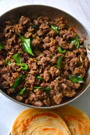

The dish is prepared by cooking chunks of meat in a mixture of spices which include turmeric, coriander, garam masala, black pepper, red chilli, cooked along with onions, shallots, ginger and garlic. Slivers of coconut, fried in coconut oil and curry leaves are also used for garnish. The meat is usually cooked in a pressure cooker to soften it before it is slow roasted in the mixture of spices, till it reaches a dry consistency.
130 120

Beef
The dish is prepared by cooking chunks of meat in a mixture of spices which include turmeric, coriander, garam masala, black pepper, red chilli, cooked along with onions, shallots, ginger and garlic. Slivers of coconut, fried in coconut oil and curry leaves are also used for garnish. The meat is usually cooked in a pressure cooker to soften it before it is slow roasted in the mixture of spices, till it reaches a dry consistency.
120 90
Beef Beriyani
The dish is prepared by cooking chunks of meat in a mixture of spices which include turmeric, coriander, garam masala, black pepper, red chilli, cooked along with onions, shallots, ginger and garlic. Slivers of coconut, fried in coconut oil and curry leaves are also used for garnish. The meat is usually cooked in a pressure cooker to soften it before it is slow roasted in the mixture of spices, till it reaches a dry consistency.
100 60
Beef beriyani Special
The dish is prepared by cooking chunks of meat in a mixture of spices which include turmeric, coriander, garam masala, black pepper, red chilli, cooked along with onions, shallots, ginger and garlic. Slivers of coconut, fried in coconut oil and curry leaves are also used for garnish. The meat is usually cooked in a pressure cooker to soften it before it is slow roasted in the mixture of spices, till it reaches a dry consistency